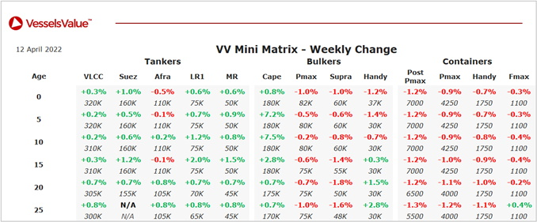

Bulkers:Capesize values have firmed.
Capesize Red Sage (182,000 DWT, Jan 2015, Japan Marine United) sold to Valhal Shipping for USD 47.50 mil, VV Value USD 42.73 mil – BWTS Fitted.
Panamax Coral Crystal (78,100 DWT, Aug 2012, Shin Kurushima Toyohashi) sold to undisclosed buyers for USD 23.50 mil, VV Value USD 26.10 mil – BWTS Fitted.
Ultramax Ultra Initiator (62,600 DWT, Jun 2019, Oshima) sold to undisclosed buyers for USD 36.80 mil, VV Value USD 37.42 mil – DD Due.
Supramax ASL Mercury (57,000 DWT, Dec 2010, Jiangsu Hantong Ship Heavy Industry) sold to undisclosed buyers for USD 16.00 mil, VV Value USD 16.98 mil – BWTS Fitted.
Supramax Eny (53,500 DWT, Jun 2006, Iwagi Zosen) sold to Middle Eastern buyers for USD 17.20 mil, VV Value USD 16.67 mil – BWTS Fitted.
Handy BC Strategic Encounter (33,000 DWT, Aug 2010, Zhejiang Zhenghe Shipbuilding) sold to unknown Turkish buyers for USD 14.20 mil, VV Value USD 12.19 mil.
Tankers:LR1 values have firmed.
LR3 SKS Skeena (158,900 DWT, Aug 2006, Hyundai Samho Heavy Ind) sold to unknown Greek buyers for USD 23.50 mil, VV Value USD 22.28 mil – DD Due.
Aframax Berica (115,100 DWT, Oct 2008, Sasebo) sold to undisclosed buyers for USD 23.00 mil, VV Value USD 22.97 mil.
Aframax New York Star, Philadelphia Star (115,100 DWT, Mar – Jun 2022, Daehan) sold en bloc to GNMTC for USD 123 mil, VV Value USD 124.18 mil – Resale.
LR2 STI Nautilus (113,000 DWT, May 2016, CSSC OME) sold to Torm for USD 45.00 mil, VV Value USD 43.71 mil – BWTS Fitted.
MR2 Prime Express (46,000 DWT, Nov 2010, Shin Kurushima Onishi) sold to undisclosed buyers for USD 15.50 mil, VV Value USD 15.73 mil.
MR2 Pro Emerald (45,000 DWT, Jan 2003, Shin Kurushima Onishi) sold to Far Eastern buyers for USD 6.80 mil, VV Value USD 6.69 mil.
Containers:Container values have softened.
No sales to report.
